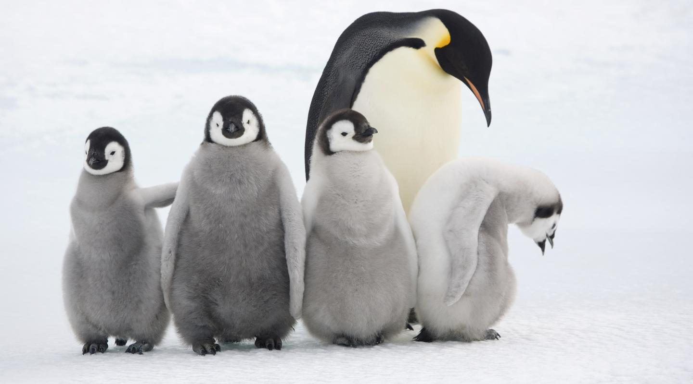

Wild Emperor penguins are only found in Antarctica. They breed and raise their young mostly on ‘fast ice’, a floating platform of frozen ocean which is connected to the land or to ice shelves. From birth, they spend their entire lives in and around the Antarctic ice, although very rarely vagrants have turned up off the coast of New Zealand.
Emperors are the biggest of the 18 species of penguin found today, and one of the largest of all birds. They are approximately 120cm tall (about the height of a six year old child) and weigh in at around 40 kg, though their weight does fluctuate dramatically throughout the year.
But they would be dwarfed by the ancient ‘mega-penguins’. Fossils recovered from the Antarctic Peninsula reveal that a colossus species of penguin which lived about 37 million years ago may have stood 2m tall and weighed as much as 115 kg.
Emperors are the least common Antarctic penguin, with global population estimates of 265,500–278,500 breeding pairs. We're funding research in the Antarctic, because the more we know about these creatures, the better we can protect them. This will encourage the formation of Marine Protected Areas and will help in protecting the species in the face of climate change.